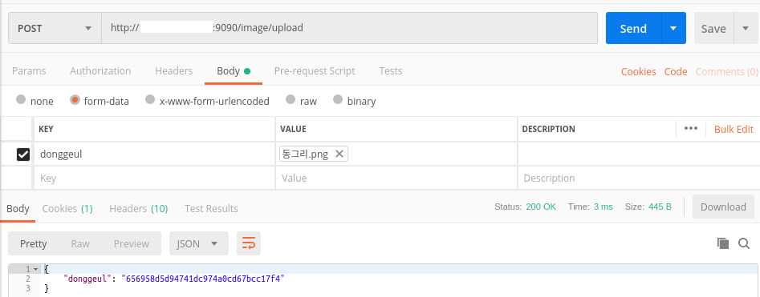
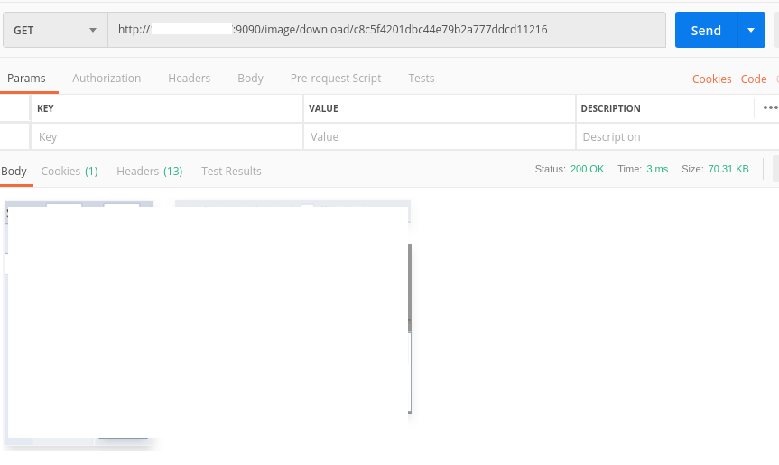
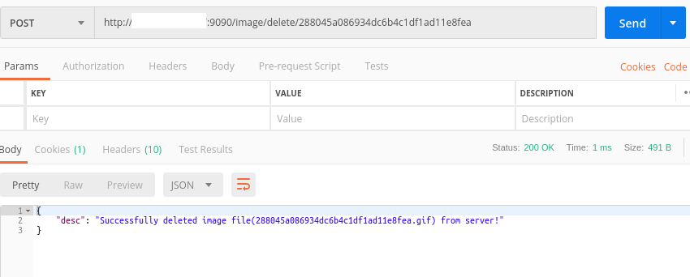

HyperDM WebServer
HyperDM 웹서버를 통해 집행된 캠페인 페이지를 보고, 이미지 파일을 업로드/다운로드 할 수 있습니다.
집행된 캠페인 페이지 보기
캠페인 웹페이지 주소는 http://SET_HOST_IP_HERE:8080/campaign 입니다.
집행된 캠페인 목록을 볼 수 있으며, 캠페인 항목 클릭시 해당 캠페인 웹페이지를 볼 수 있습니다.
집행된 캠페인 페이지로 이동하기
이미지 파일 업로드/다운로드
현재 접속한 웹서버가 이미지 서버를 겸하고 있으며, 주소는 http://SET_HOST_IP_HERE:9090/image 입니다.
이미지 업로드: /image/upload에 POST 요청으로 이미지를 업로드
POST Request body에는 form-data 형식으로 이미지 파일에 대한 key, 이미지 파일을 포함하여 요청합니다.
요청에 대한 응답으로 이미지 key-uuid JSON 객체가 반환됩니다.
DM 스튜디오에서는 contents 문자열 속성을 작성할때, 업로드할 이미지의 key를 응답 받은 JSON 객체의 key에 대응되는 uuid로 치환하는 등의 방식으로 사용하면 될 것 같습니다.
* 이미지 파일 key는 아래 예시 사진에서 donggeul에 해당.

이미지 다운로드: /image/download/:uuid 에 GET 요청으로 이미지를 다운로드
GET Request URI에 이미지 uuid를 포함시켜 요청합니다.
요청한 이미지는 확장자에 맞는 MIMETYPE으로 전송되며, 일치하는 MIMETYPE이 없는 경우 application/octet-stream 형태로 다운로드 됩니다.
다운로드된 이미지는 Image src 속성을 통해 사용할 수 있습니다.

이미지 삭제: /image/delete/:uuid 에 POST 요청으로 이미지를 삭제
POST Request URI에 이미지 uuid를 포함시켜 요청합니다.

이미지 관리 방식
웹서버의 파일시스템에 디렉토리를 만들어 이미지를 저장합니다.(Ex. /webtob/campaignImages/123/8a3cfa4acbaa473696f7fef97a720e4b.png)
업로드한 이미지는 발급된 이미지 uuid와 같은 파일명으로 저장됩니다.
구체적인 이미지 디렉토리 구조는 추후 논의될 필요가 있습니다.